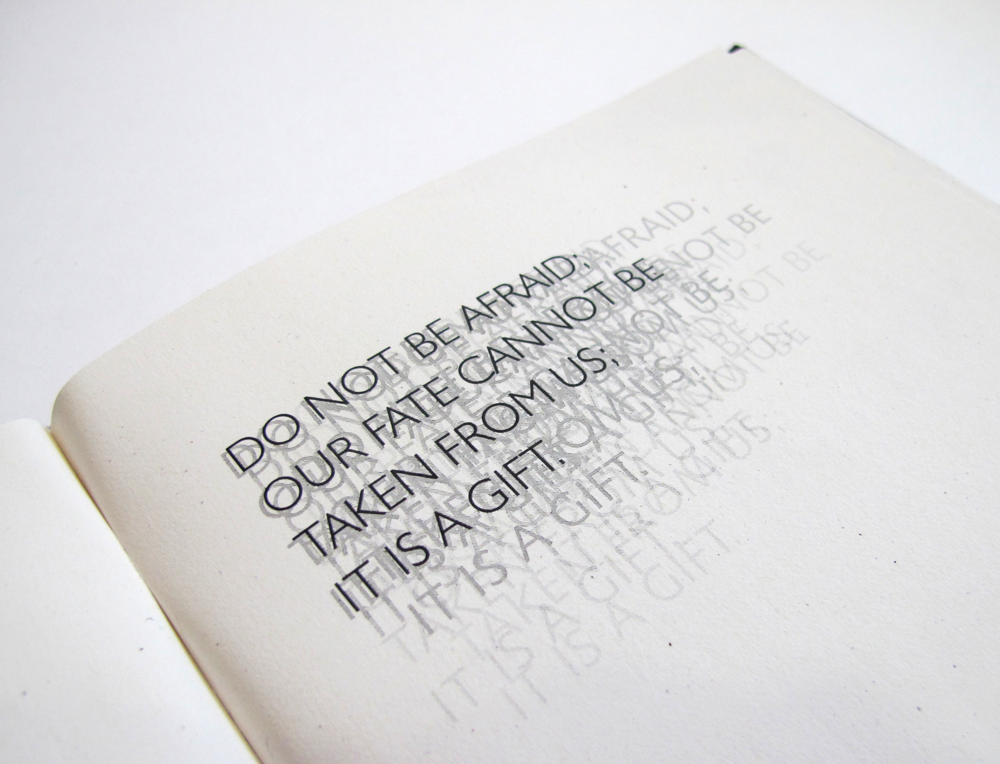
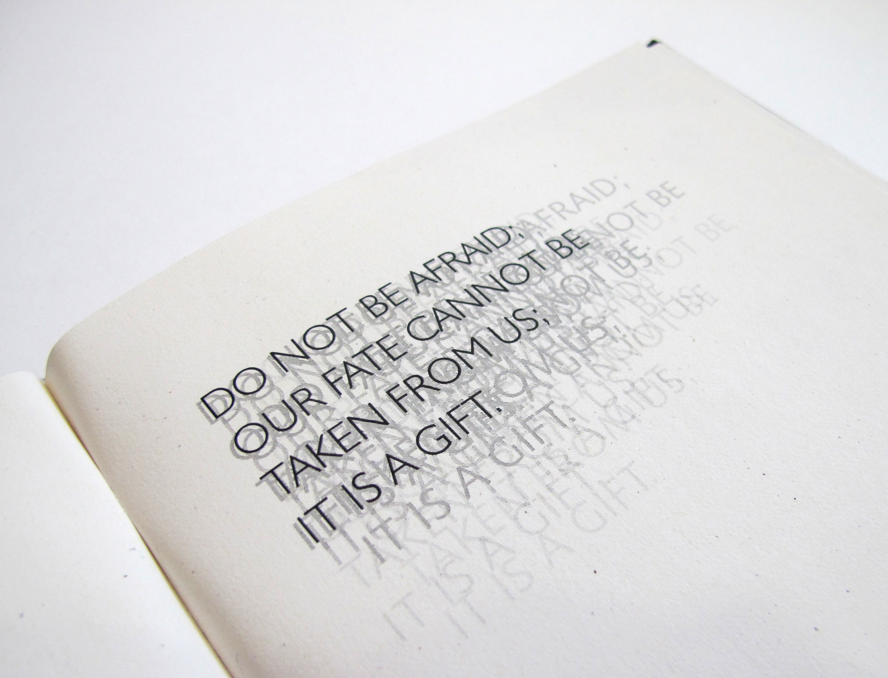
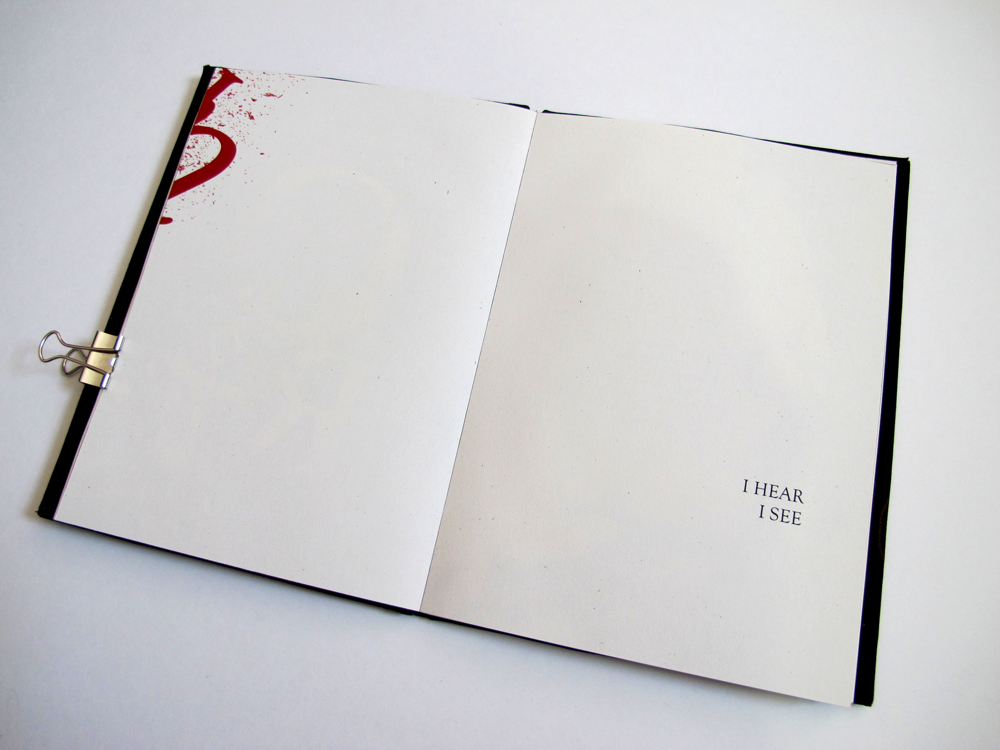
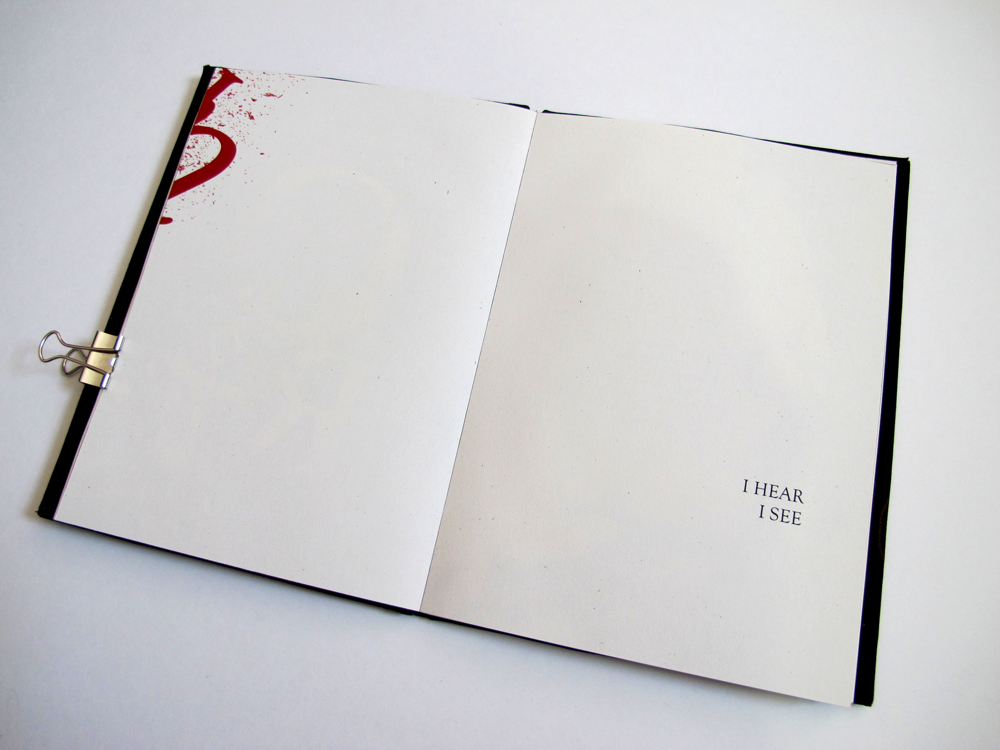
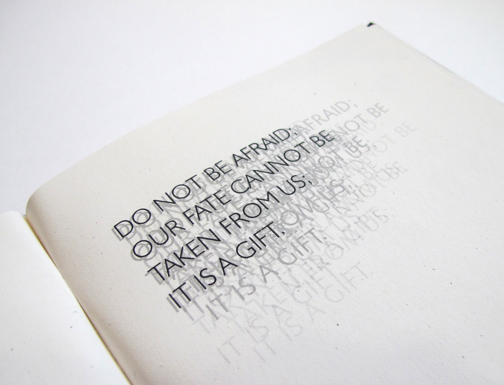
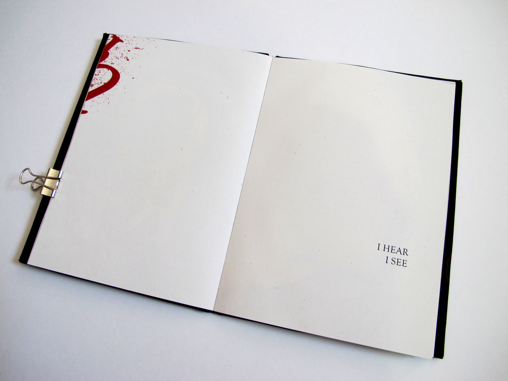
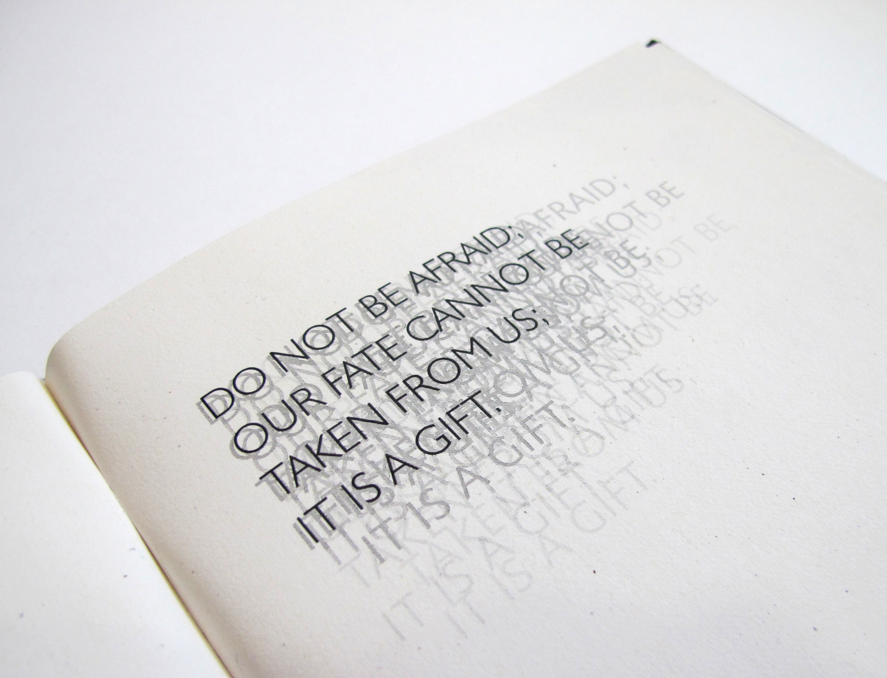
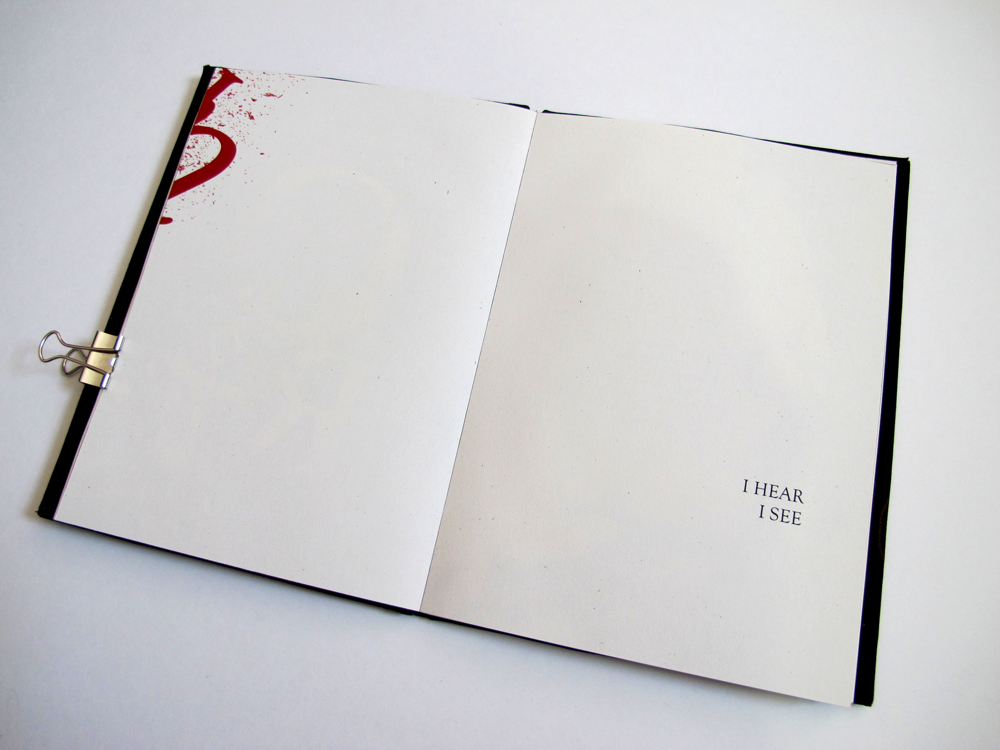

 



This is a typographic expressive book. The main text is Plush’s letter: There was a war, a great war, and now it is over, and the additional text is Dante’s Inferno. Plush wrote the letter to his parents, and he describes what he saw, heard and experienced in World War II. Using blood mark throughout the book creates a violent and bloody sense of war, and I overlap, cut and destroy the type to express Plush’s fear, anxiety and shock. The book makes a piece of history come alive to reader.
 On November 11th of 1918, the First World War effectively came to an end with the signing of the armistice — an agreement between Allied and German forces to end, with immediate effect, all hostilies and withdraw troops from the battlefield. Peace, at last, after four years of fighting and more than 16 million deaths. Shortly after the armistice was signed, 26 - year - old Lewis Plush — a lieutenant with the American Expeditionary Forces — wrote home to his parents and spoke with great eloquence of his experience. He returned home in February of 1919.
( Source: War Letters, edited by Andrew Carroll, via Wikipedia.)


On November 11th of 1918, the First World War effectively came to an end with the signing of the armistice — an agreement between Allied and German forces to end, with immediate effect, all hostilies and withdraw troops from the battlefield. Peace, at last, after four years of fighting and more than 16 million deaths. Shortly after the armistice was signed, 26 - year - old Lewis Plush — a lieutenant with the American Expeditionary Forces — wrote home to his parents and spoke with great eloquence of his experience. He returned home in February of 1919.
( Source: War Letters, edited by Andrew Carroll, via Wikipedia.)

